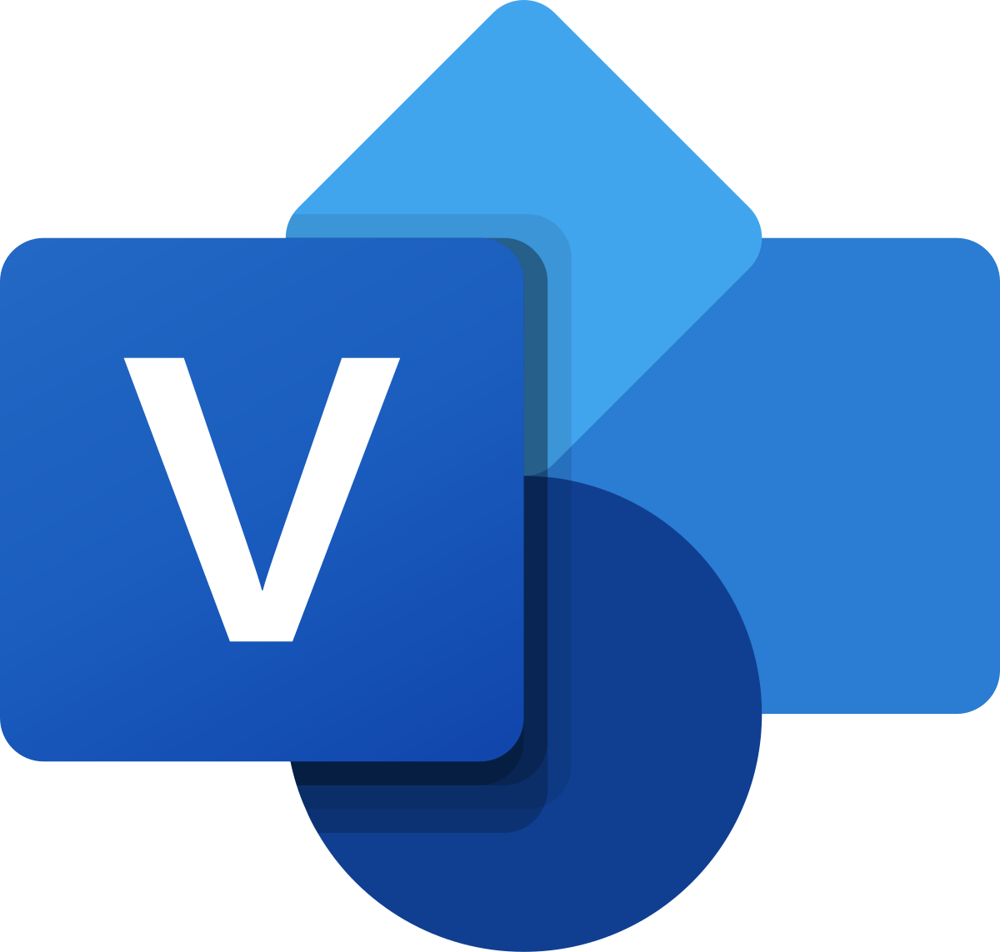
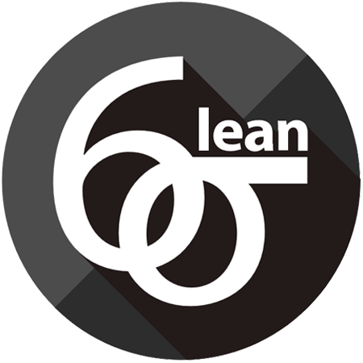

Experiencia Profesional
Soy Ingeniera Industrial egresada de la Escuela Colombiana de Ingeniería Julio Garavito, especializada en optimización de procesos a través de metodologías Lean Management y Six Sigma. Mi enfoque se centra en simplificar flujos de trabajo, eliminar desperdicios y mejorar el rendimiento para crear valor real tanto para los equipos como para los clientes. A lo largo de mi carrera he coordinado equipos multidisciplinarios, optimizado recursos y garantizado que cada proyecto cumpla con altos estándares de calidad y eficiencia. Mis principales áreas de experiencia incluyen:
Áreas Clave de Especialización
Herramientas Técnicas
Power BI

Excel

Visio

Lean Six Sigma
Bizagi Modeler
 LinkedIn
LinkedIn Correo
Correo GitHub
GitHub